노트
노트에 원자력 발전에 대한 다음 KWL 차트를 완성하세요.
이 과제는 이 학습 활동 이전에 원자력에 대해 이미 알고 있는 것(KNOW)을 떠올리는 것입니다. 두 번째 열은 원자력 발전에 대해 알고 싶은 것(WANT)의 질문을 기록하는 곳입니다. 마지막 열은 다음 학습 활동을 탐구한 후까지 비워 두세요. 원자력에 대해 배운 것(LEARNED)을 이 열에 채워 넣으세요.
| 무엇을 알고 있나요(KNOW)? | 무엇을 알고 싶나요(WANT)? | 무엇을 배웠나요(LEARNED)? |
|---|---|---|
표를 완성한 후, 다음 동영상 또는 원자력 발전소는 어떻게 작동하는가새 창에서 열림 기사를 살펴보세요.
탐구해보기!
다음 원자력 발전에 관한 동영상을 시청한 후 노트의 KWL 차트 마지막 열에 내용을 추가하세요.

핵반응
온타리오주에서 에너지 수요가 증가하고 온실가스 배출에 대한 우려로 화석 연료 사용을 꺼리는 상황에서, 하나의 가능한 대안 에너지원은 원자로입니다. 원자로는 막대한 양의 에너지를 생산하지만, 몇 가지 단점과 우려도 있습니다. 많은 사람들이 원자력 에너지(nuclear energy)에 대해 강한 의견을 가지고 있습니다. 그들은 그 선택을 하는 데 필요한 모든 정보를 가지고 있을까요? 이 학습 활동에서는 핵반응과 원자력 에너지에 대해 배우고, 자신만의 의견을 형성할 수 있을 만큼 충분한 이해를 발전시킬 것입니다.
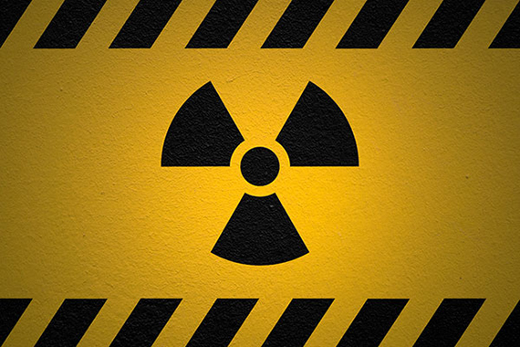
간략한 역사
핵의 시대는 1945년 미국이 최초의 핵무기를 실험하면서 시작되었습니다. 핵반응의 끔찍한 잠재력은 일본의 히로시마와 나가사키에 핵폭탄이 투하되었을 때 증명되었습니다. 이것은 그 이후로 핵 기술에 대한 사람들의 인식을 형성해 왔습니다. 그 참혹한 사건으로부터 10년 이내에 과학자들과 공학자들은 핵폭발에서 방출되는 에너지를 제어하여 대신 전력을 생산하는 방법을 찾아냈습니다. 그 이후로 전 세계에 수백 개의 발전소가 건설되었습니다. 예를 들어, 약 150척의 선박이 원자로를 동력원으로 사용해 왔습니다.
원자력 에너지
원자력 에너지는 몇 가지 주목할 만한 예외를 제외하면 비교적 좋은 안전 기록을 가지고 있습니다. 1979년 미국 Three Mile Island 원자력 발전소에서 발생한 원자로 관련 사고는 원자력 에너지의 안전성에 대한 경각심을 불러일으켰습니다. 7년 후, 우크라이나 Chernobyl 원자력 발전소에서의 재난은 그 위험의 완전한 가능성을 보여주었습니다. 원자로 중 하나가 노심 용융(meltdown)을 일으켜 방사선이 아시아와 유럽 전역으로 퍼졌을 때 많은 사람들이 사망했습니다. 이 재난이 인체 건강과 환경에 미친 영향의 범위는 막대했습니다. 가장 최근의 원자력 재난은 2011년 일본 후쿠시마에서 발생했습니다. 이것은 지진에 이은 쓰나미에 의해 발생했습니다. 이러한 재난들을 근거로 핵 기술을 쉽게 배제할 수도 있지만, 특정 기술에 대해 완전히 이해하기 전에 관점을 채택하는 것은 현명하지 않습니다. 핵 기술이 우리 사회에 긍정적인 영향을 미치는 방식의 수는 여러분을 놀라게 할 수 있습니다.
온타리오주의 Pickering 원자력 발전소는 2026년에 생산을 중단할 예정입니다. 이 원자로가 가동을 중단하면, 온타리오주는 전력 수요를 충족시키는 데 필요한 발전 용량을 어디서 확보할 것일까요? 방사능의 원천인 이 발전소는 어떻게 처리될 것일까요? 공학자들과 설계자들은 이제 자신들이 설계한 제품이 제품 수명 주기(product life cycle)의 끝에 도달했을 때 어떻게 해야 하는지에 대해 많은 고민을 합니다.
다음 지도는 전 세계 원자력 발전소의 위치를 보여줍니다.
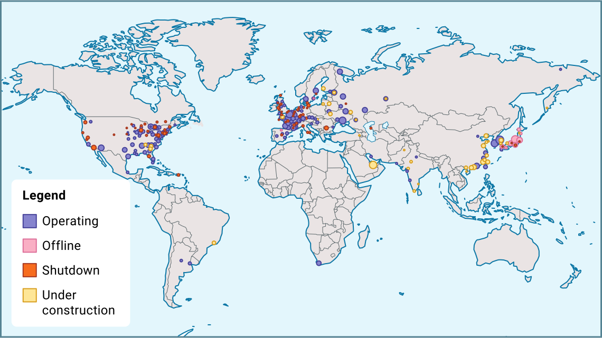
복습
다음 대화형 원소 주기율표(periodic table)를 살펴보세요. 이 학습 활동에서 자주 참조해야 합니다.
방사성 원자
원자(atom)라는 단어는 '나눌 수 없는'이라는 뜻의 그리스어 atomos에서 유래했습니다. 모든 물질을 구성하는 궁극적으로 가장 작은 입자가 있을 것이라고 상상되었고, 원자라는 용어가 적용되었습니다. 더 많은 연구를 통해 원자 내부에 다른 구조가 있다는 것이 밝혀졌습니다.
다음 그림의 첫 번째 다이어그램은 atomos의 개념을 보여주고, 두 번째 다이어그램은 조밀하고 양전하를 띤 원자핵(nucleus)과 원자핵 주위의 공간을 궤도 운동하는 음전하의 전자(electron)로 구성된 현대적 원자 모형을 보여줍니다.
원자핵 내부에 더 많은 구조가 있다는 것이 발견되면서 원자 모형은 더욱 복잡해졌습니다. 원자핵에는 중성자(neutron)와 양성자(proton)라는 두 가지 기본 입자가 포함되어 있으며, 둘 다 전자보다 훨씬 무겁다는 것이 발견되었습니다. 양성자는 양전하를 가지며, 중성자는 중성(전하 없음)입니다. 이 단원의 나머지 부분에서는 원자핵에 초점을 맞출 것입니다.
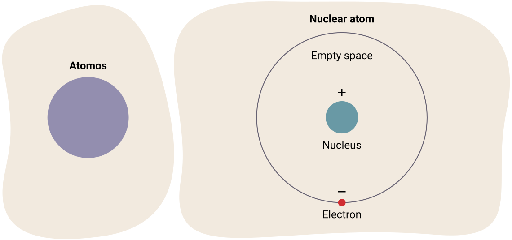
복습
원자는 원자핵의 양성자 수로 식별됩니다. 이것을 원자 번호(atomic number)라고 합니다. 다음 대화형 원소 주기율표를 다시 살펴보세요. 수소(H)는 원소 번호 1입니다. 이는 수소의 원자핵에 양성자가 하나만 있다는 것을 의미합니다. 헬륨(He)은 원소 번호 2입니다. 헬륨의 원자핵에는 양성자가 두 개 있습니다. 원소 번호는 원자 번호와 같습니다.
직접 해보기!
대화형 원소 주기율표를 사용하여 양성자 수(원자 번호)를 드롭다운 메뉴에서 올바른 원소 기호 및 이름과 일치시키고, 제출 버튼을 눌러 이해도를 확인하세요.
원자핵의 양성자 수와 중성자 수의 합을 질량수(mass number)라고 합니다. 대화형 원소 주기율표에서 질량수는 제공되지 않습니다. 그러나 또 다른 중요한 정보인 평균 원자 질량(average atomic mass)이 제공됩니다. 이 값은 해당 원소의 모든 동위원소(isotope) 질량의 가중 평균입니다. 주기율표에서 원소를 누르면 이 값을 확인할 수 있습니다.
정의
복습
원자 번호: 원자의 양성자 수입니다. 주기율표에서 각 원소 칸의 상단에 표시되는 경우가 많습니다.
질량수: 원자의 양성자 + 중성자 수입니다. 이 수는 원소의 동위원소에 따라 다릅니다. 이전 과학 과목에서 동위원소란 같은 수의 양성자를 가지지만 다른 수의 중성자를 가진 원소임을 떠올려 보세요.
핵 동위원소
원자의 질량이 양성자 수와 중성자 수의 합인 "질량수"에 대해 읽어 본 적이 있나요?
특정 원소의 모든 원자가 같은 질량을 가지는 것은 아닙니다.
대부분의 수소 원자는 양성자 1개와 중성자 0개(질량수 1)를 가지지만, 일부 수소는 실제로 추가 중성자를 포함합니다. 이런 종류의 수소는 질량수가 2입니다. 이것이 바로 앞서 배운 중수(heavy water)의 성분인 중수소(deuterium)입니다. 지구에서 발견되는 대부분의 우라늄은 질량수가 238이며, 양성자 92개와 중성자 146개를 가지고 있습니다. 이것은 매우 안정적입니다. 그러나 우라늄의 약 0.72%는 중성자가 몇 개 부족합니다. 이런 종류의 우라늄 원자는 중성자 143개(질량수 235)를 가지며, CANDU 원자로의 주요 연료원입니다.
정의
동위원소
원소의 동위원소는 중성자 수가 다른 해당 원소의 모든 변형입니다. 같은 원소의 모든 동위원소는 같은 수의 양성자를 가지지만, 다른 수의 중성자를 가집니다. 문장으로 쓸 때 동위원소는 일반적으로 원소 이름, 대시, 그리고 질량수로 표기합니다. 예를 들어, 우라늄-238과 우라늄-235는 모두 우라늄의 동위원소입니다.
핵 기호
원자의 기호가 다음과 같은 방식으로 기록된 것을 자주 볼 수 있습니다:
X는 원소의 기호를 나타냅니다. A는 질량수(양성자와 중성자의 수)를 나타내고, Z는 원자 번호(양성자 수)를 나타냅니다. 더 높은 수준에서는 원소의 이름으로부터 이미 원자 번호를 알 수 있으므로 Z 값이 생략될 수 있습니다. 같은 원소의 모든 동위원소는 같은 수의 양성자를 가집니다.
이러한 원소 기호에서 원자 번호가 위인지 아래인지 기억하는 것이 흔한 걱정거리입니다. 유용한 팁은 질량수(양성자 + 중성자)가 어디에 쓰이든 항상 더 큰 수라는 것을 아는 것입니다.
원자 번호는 원자의 종류를 식별하는 데 사용할 수 있지만, 질량수로는 그럴 수 없다는 점에 주목하세요. 이는 원자핵의 중성자 수가 항상 같지 않기 때문입니다. 다음 다이어그램은 수소의 세 가지 다른 동위원소를 보여줍니다. 예를 들어, 수소는 보통 원자핵에 양성자 1개와 중성자 0개를 가집니다. 이것은 로 쓸 수 있으며, 경수소(protium)라고 합니다. 그러나 다음 그림에서 보듯이, 수소의 일부 동위원소는 원자핵에 중성자를 가지고 있습니다. 예를 들어, 수소의 동위원소인 중수소(deuterium) ()는 원자핵에 양성자 1개와 중성자 1개를 가집니다. 삼중수소(tritium)()라고 하는 수소의 세 번째 동위원소는 중성자 2개를 가집니다.
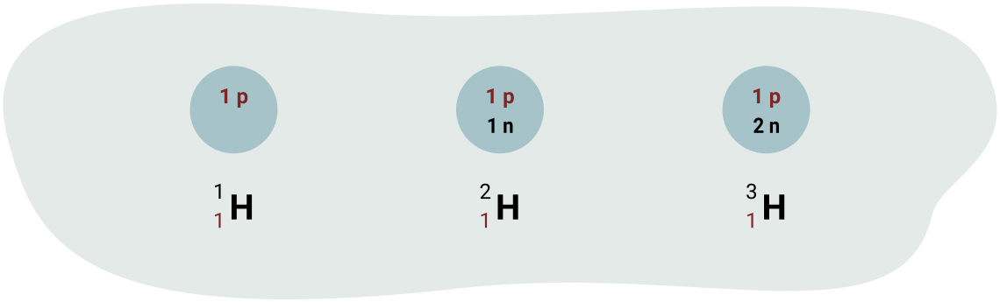
예시: 칼륨
원소 칼륨(K)을 찾아보세요. 원자 번호(양성자 수)는 19입니다. 평균 원자 질량은 39.098 원자 질량 단위(amu)입니다.
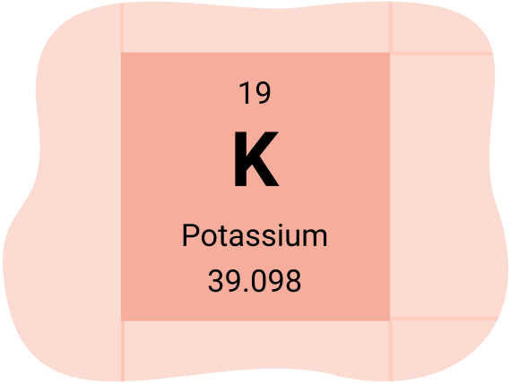
각 원소의 양성자 수를 알아내기 위해 앞의 주기율표를 참조할 것입니다.
질량수는 주어진 원자의 양성자와 중성자 수를 나타내며 원자 질량 단위(amu)로 표현됩니다. 원자 질량은 특정 원자의 모든 동위원소의 평균 질량을 제공합니다. 같은 원소의 서로 다른 동위원소가 얼마나 풍부한지를 고려하므로, 가중 평균을 제공합니다.
이 칼륨 동위원소는 칼륨-39로 명명하여 구별할 수 있으며, 여기서 39는 질량수를 의미합니다.
노트
노트에 질량수에 대한 다음 질문에 답하세요. 다음 각 원소에 대해 중성자 수를 계산하세요.
- 라돈-222 (222Rn)
136
중성자 수 = 질량수 - 원자 번호
136 = 222 - 86
라돈-222에는 136개의 중성자가 있습니다.
- 우라늄-236 (236U)
중성자 수 = 질량수 - 원자 번호
144 = 236 - 92
우라늄-236에는 144개의 중성자가 있습니다.
더 알아보기
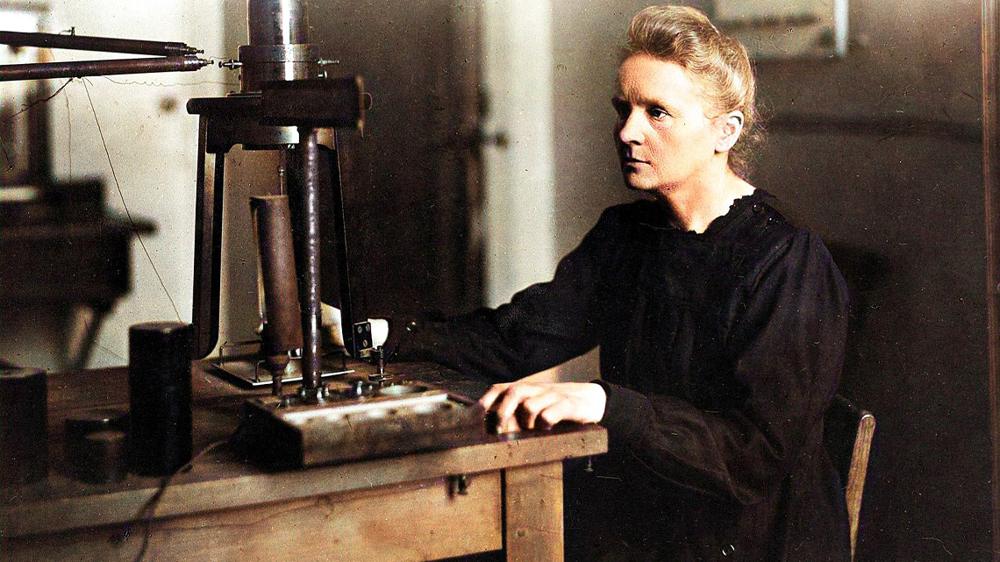
알고 계셨나요: Marie Curie는 방사성 원소인 폴로늄과 라듐을 발견한 공로로 노벨상을 수상했습니다. 그녀는 라듐을 순수 금속으로 성공적으로 생산하고 방사성 원소와 그 화합물의 성질을 기록했습니다. 그녀는 또한 또 다른 노벨상을 수상했으며, 여전히 물리학과 화학이라는 서로 다른 과학 분야에서 두 개의 노벨상을 수상한 유일한 인물입니다.
핵붕괴
원자핵 내의 양성자는 모두 양전하를 띠고 있습니다. 왜 그들이 밀접하게 모여 있을까요? 원자핵 내의 양성자들은 비슷한 전하를 가지고 있기 때문에 큰 힘으로 서로 밀어냅니다. 다행히도, 원자핵 내부에는 이 반발력을 극복하고 양성자를 제자리에 유지시킬 수 있는 강한 핵력(strong nuclear force)이라는 또 다른 힘이 있으며, 이는 다음 다이어그램에 나타나 있습니다.
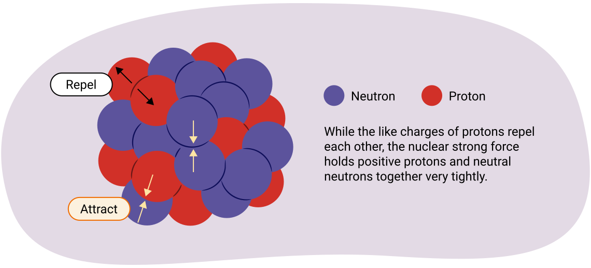
이 강한 힘은 원자핵 내 중성자 수에 크게 영향을 받습니다. 일반적으로 원자핵에 양성자가 더 많은 원자는 서로 밀어내는 양성자가 더 많기 때문에 덜 안정적인 경향이 있습니다. 이 추가 양성자들의 반발 전기력에 대항하기 위해 안정화를 돕는 더 많은 중성자가 필요합니다. 그러나 중성자가 너무 많거나 너무 적으면 원자핵은 불안정한 상태로 남게 됩니다.
원자핵에서 때때로 방출되는 입자와 에너지를 방사선(radiation)이라고 합니다. 원자핵이 방사선을 방출할 때, 붕괴(decay)한다고 합니다.
불안정한 원자는 방사성 붕괴(radioactive decay)를 통해 안정해집니다. 방사성 붕괴에는 세 가지 유형이 있습니다: 알파 붕괴(alpha decay, α), 베타 붕괴(beta decay, β), 감마 붕괴(gamma decay, γ)
방사성 붕괴 유형의 비교
알파 입자의 질량과 전하는 양성자 2개와 중성자 2개를 포함하고 있음을 나타냅니다. 베타 입자는 빠르게 움직이는 전자(음전하) 또는 양전자(양전하)이기 때문에 질량이 훨씬 작습니다. 감마 방출은 빛(복사 에너지)이므로 질량이나 전하가 없습니다. 일반적으로, 알파 입자가 세 가지 중 가장 느리고, 베타 입자는 감마 입자와 거의 같은 속도로 이동할 수 있습니다.
투과력(penetrating ability)은 거의 모든 방출을 차단하는 데 무엇이 필요한지를 나타냅니다. 다음 표에서 알파 입자는 공기나 종이로도 쉽게 차단된다는 것을 알 수 있습니다. 베타 입자를 차단하려면 얇은 금속이 필요하며, 감마 입자를 차단하려면 납과 같은 더 두꺼운 고밀도 금속이 필요합니다.
| 범주 | 알파 | 베타 | 감마 |
|---|---|---|---|
| 질량 (kg) | 6.68 × 10–27 kg | 9.31 × 10–31 kg | 0 |
| 전하 | +2 | -1 또는 +1 | 0 |
| 속력 | 최대 6.67 × 107 m/s | 6.67 × 107 m/s ~ 거의 3.0 × 108 m/s | 3.0 × 108 m/s |
| 투과력 | 얇은 종이 또는 최대 5 cm의 공기 | 얇은 금속 (3~6 mm의 알루미늄) | 두꺼운 금속 (30 cm의 납) |
노트
세 가지 유형의 방사성 붕괴에 대해 알게 된 것을 활용하여 노트에 다음 붕괴 문제를 완성하세요. 형성되는 새로운 원소를 식별하기 위해 대화형 원소 주기율표를 사용해야 합니다.
1. 우라늄-238 원자가 알파 붕괴를 겪습니다. 올바른 원자 기호로 핵반응 방정식을 기록하세요.
2. 납-212 원자가 베타-음 붕괴를 겪습니다. 올바른 원자 기호로 핵반응식을 서술하세요.
붕괴 계열
대부분의 원소는 하나 또는 두 개의 비교적 안정적인 동위원소를 가지고 있습니다. 불안정한 원자핵이 붕괴할 때, 그 생성물도 종종 방사성입니다. 이것은 초기 동위원소가 안정적인 종류로 변환되기 전에 여러 다른 종류의 원소를 거치는 붕괴 사슬을 만들 수 있습니다. 이 일련의 단계를 동위원소의 붕괴 계열(decay series)이라고 합니다. 예를 들어, 다음은 우라늄-238의 붕괴 계열입니다.
| 우라늄-238 붕괴 계열 | |||||
|---|---|---|---|---|---|
| 방사성 동위원소 | 반감기 | 붕괴 유형 | 방사성 동위원소 | 반감기 | 붕괴 유형 |
| 우라늄-238 | 45억 년 | α | 납-214 | 27분 | β- |
| 토륨-234 | 24일 | β- | 비스무트-214 | 20분 | β- |
| 프로탁티늄-234 | 6.7시간 | β- | 폴로늄-214 | 0.00016초 | α |
| 우라늄-234 | 245,000년 | α | 납-210 | 22년 | β- |
| 토륨-230 | 75,000년 | α | 비스무트-210 | 5일 | β- |
| 라듐-226 | 1600년 | α | 폴로늄-210 | 138일 | α |
| 라돈-222 | 3.8일 | α | 납-206 | (안정) | |
| 폴로늄-218 | 3.1분 | α | |||
반감기
동전을 공중에 던지면, 앞면이 나올지 뒷면이 나올지 확실히 알 수 있는 방법은 없습니다. 어느 쪽이든 나올 확률은 50%입니다. 그러나 동전을 연속으로 1000번 던지면, 약 50%의 확률로 앞면이 나올 것이라고 상당히 확신할 수 있습니다. 이 원리는 방사능을 모델링하는 데 사용됩니다.
특정 불안정한 원자핵이 언제 붕괴할지 결정할 방법은 없습니다. 일부 원자핵은 다른 것들보다 더 안정적입니다. 방사성 물질의 시료가 입자를 방출하는 빈도는 원자핵의 성질에 따라 달라집니다. 그러나 아주 작은 시료도 엄청난 수의 불안정한 원자핵을 포함합니다. 이 규모에서 연구하면, 많은 횟수의 동전 던지기와 마찬가지로 붕괴 속도를 매우 정확하게 예측할 수 있습니다.
정의
동위원소의 반감기는 시료에서 원자핵의 절반이 붕괴하는 데 걸리는 시간입니다.
더 알아보기
알고 계셨나요: Chien-Shiung Wu는 실험 물리학자로 Manhattan 프로젝트에 참여하여 우라늄을 동위원소 우라늄-235와 우라늄-238로 분리하는 과정을 개발했습니다. 원하는 검색 엔진을 사용하여 Manhattan 프로젝트에 대해 더 알아보세요.
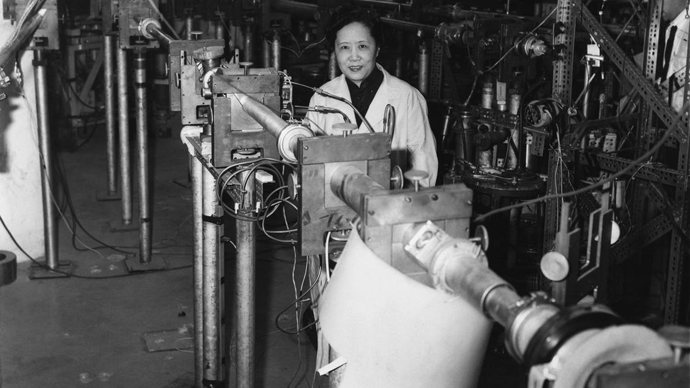
직접 해보기!
다음 시뮬레이션에서 방사성 붕괴가 두 가지 변수 — 방사성 물질의 반감기와 시료 내 방사성 원자의 수 — 에 의해 어떻게 영향을 받는지 조사할 것입니다.
노트
노트를 사용하여 다음 붕괴 문제를 풀어보세요. 이해도를 확인하기 위해 예시 답안과 비교해 보세요.
토륨-234는 우라늄-238의 방사성 붕괴 생성물입니다. 토륨-234 100g이 있다면, 24일 후에는 토륨-234가 50g만 남게 됩니다. 시료의 나머지 절반은 베타 붕괴를 겪었을 것입니다. 24일이 더 지나면, 50g의 절반이 붕괴되어 25g만 남게 됩니다.
다음 질문에 답하기 위해 이전 붕괴 계열 표의 반감기 값을 사용하세요.
1. 비스무트-214 200g의 시료로 시작하면, 100g만 남기까지 얼마나 걸릴까요?
20분이 걸립니다. 반감기가 20분이므로, 원래 양이 20분 만에 절반으로 줄어듭니다.
2. 비스무트-214 200g의 시료로 시작하면, 80분 후에 얼마나 남을까요?
12.5g이 남습니다. 80분은 4번의 반감기(20분 x 4 = 80분)입니다. 첫 번째 반감기 후 100g이 남고, 두 번째 후 50g, 세 번째 후 25g, 네 번째 반감기 후 12.5g이 남습니다.
3. a) 라듐-226의 방사성 붕괴에 대한 다음 표를 채우세요. 이후, 그래프 계산기, GeoGebra, 또는 모눈종이새 창에서 열림를 사용하여 y축에 질량, x축에 시간을 놓고 라듐-226의 방사성 붕괴 그래프를 작성하세요. 이러한 유형의 그래프를 붕괴 곡선(decay curve)이라고 합니다.
| 반감기 | 시간 (년) | 라듐의 질량 (g) |
|---|---|---|
| - | 0 | 32 |
| 1번째 반감기: | 1,600 | 16 |
| 2번째 반감기: | 3,200 | 8 |
| 3번째 반감기: | 4,800 | 4 |
| 4번째 반감기: | 6,400 | 2 |
| 5번째 반감기: | 8,000 | 1 |
b) 그래프를 사용하여 라듐 시료가 12g으로 줄어드는 시간을 추정하세요. 이전 표에서 라듐-226의 반감기가 1600년이라는 것을 알고 있습니다.
다음 그래프에서 보듯이 약 2400년입니다.
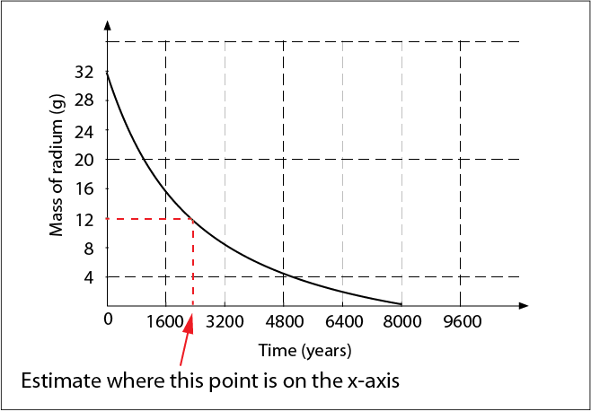
응용: 방사성 연대 측정
태양의 방사선으로 인해, 지구 대기의 일부 탄소는 일반적인 탄소-12 외에 탄소-14입니다. 생물이 탄소-14를 들이마시면 체내에 흡수되어 일생 동안 축적됩니다. 죽으면 호흡을 멈춥니다. 탄소-14는 방사성이므로 호흡을 멈추면 탄소-14의 양이 감소합니다. 추정되는 초기 탄소-14 양과 현재 양을 비교하여, 과학자들은 탄소가 분해된 기간을 추정할 수 있습니다. 탄소-14의 붕괴 곡선은 다음 그림에 나타나 있습니다. 곡선의 모양은 라듐의 것과 같지만 시간 척도가 다르다는 것에 주목하세요. 그래프를 사용하여 탄소-14의 반감기를 결정하세요.
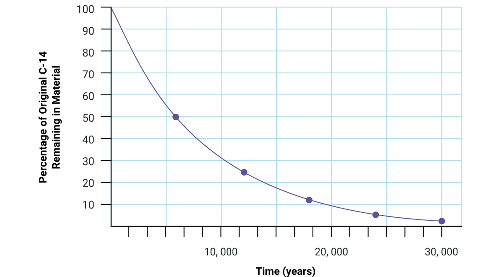
약 6000년입니다. (탄소-14의 실제 반감기는 5730년이지만, 그래프에서 정확히 추정하기는 어렵습니다.)
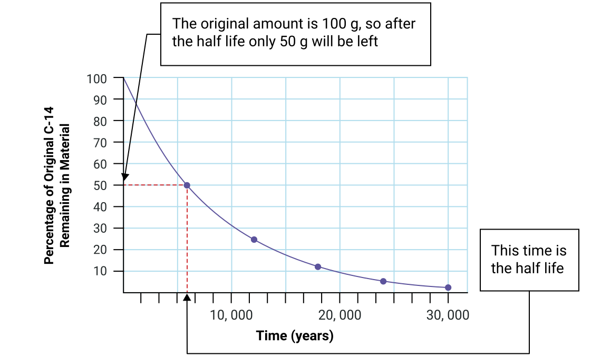
노트
노트를 사용하여 다음 탄소 연대 측정(carbon dating) 문제를 풀어보세요. 이해도를 확인하기 위해 예시 답안과 비교해 보세요.
고대 나무의 시료에는 나무가 죽었을 때 2.0 × 10-6 g의 탄소-14가 포함되어 있었다고 추정됩니다. 시료에는 현재 0.5 × 10-6 g의 탄소-14가 포함되어 있습니다. 시료의 나이는 얼마일까요?
11,460년입니다.
5730년 후, 원래 탄소-14의 절반이 남게 됩니다 (1.0 × 10-6 g).
다음 반감기, 즉 11,460년(5730년 × 2) 후에는
0.5 × 10-6 g이 남게 됩니다.
연습: 반감기
반감기와 탄소 연대 측정에 대한 새로운 지식을 활용하여 노트에 다음 문제에 답하세요. 반감기 답안지새 창에서 열림의 풀이로 이해도를 확인할 수 있습니다.
1. 스트론튬-90 시료의 질량이 64g입니다. 반감기는 29.1년입니다.
a) 시료가 16g으로 붕괴하는 데 얼마나 걸릴까요?
b) 116.4년 후에 스트론튬-90이 얼마나 남을까요?
2. 오래된 동물 뼈 시료에는 동물이 죽었을 때 4.0 × 10-6 g의 탄소-14가 포함되어 있었습니다. 뼈에는 현재 2.5 × 10-7 g의 탄소-14가 포함되어 있습니다. 탄소-14의 반감기가 5730년이라면, 동물은 얼마나 오래 전에 죽었을까요?
3. 탄소 연대 측정이 대상의 나이를 결정하는 좋은 방법이면 참(TRUE), 아니면 거짓(FALSE)으로 답하세요.
a) 오래된 양피지 조각.
b) 고대 공룡 화석.
c) 오래된 금속 칼.
응용: 의학
방사성 에너지원
방사능의 원천은 방사능을 방출하는 동안 열도 방출하기 때문에 항상 주변보다 더 뜨겁습니다. 이 열에너지는 Einstein의 방정식에 따라 질량이 에너지로 전환된 것에서 옵니다.
공식
Einstein의 방정식:
E = mc2
일반적으로, 핵반응에서 반응물(방정식의 왼쪽)의 질량은 생성물(방정식의 오른쪽)의 질량보다 약간 더 큽니다. 이 작은 질량 손실은 큰 에너지 증가로 나타납니다. Einstein의 유명한 방정식 E = mc2는 질량이 에너지로 전환될 때 형성되는 에너지의 양을 계산하는 데 사용됩니다. 방정식에서 c는 빛의 속도(speed of light)를 나타내며, 상수입니다: c = 3.0 × 108 m/s.
예시
우라늄-236의 알파 붕괴에서:
질량 결손(mass defect) = 반응물의 질량 – 생성물의 질량
질량 결손은 에너지로 전환된 질량의 양입니다.
반응물:
- 우라늄 원자의 질량: 3.919630975 × 10-25 kg
생성물:
- 토륨 원자의 질량: 3.853084652 × 10-25 kg
- 알파 입자의 질량: 6.646480725 × 10-27 kg
반응물(우라늄 원자)이 생성물(토륨과 헬륨 원자)보다 더 무겁다는 것을 알 수 있습니다. 원자들의 정확한 질량을 안다면, 얼마나 많은 질량이 사라졌는지 계산할 수 있습니다. 사라진 질량은 다음 다이어그램에 나타난 것처럼 에너지로 변환되었습니다.
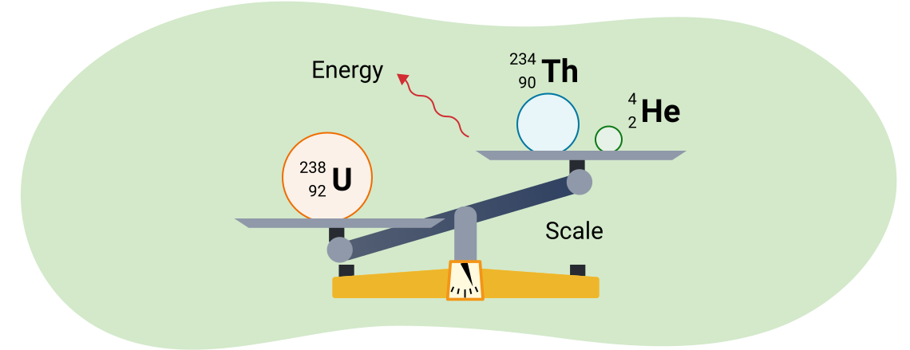
U-238의 알파 붕괴 반응에서 질량 결손은:
3.919630975 × 10-25 kg × 3.91954959 × 10-25 kg = 8.1516 × 10-30 kg
질량 결손을 사용하여 U-238의 알파 붕괴에서 방출되는 에너지를 계산하세요.
이 질량은 각 붕괴 사건에서 에너지로 전환됩니다. 에너지의 양은 Einstein의 방정식을 사용하여 구할 수 있습니다:
주어진 값:
미지수:
방정식:
풀이:
결론:
방출된 에너지는 7.3×10-13 J입니다. (빛의 속도의 주어진 값이 유효숫자 2자리였으므로 2자리입니다.)
참고: Einstein의 방정식을 사용할 때, 질량은 반드시 kg 단위여야 합니다.
이것은 단일 원자핵에서 방출되는 에너지의 양입니다. 이것은 많은 에너지처럼 보이지 않을 수 있지만, 이것은 단 한 번의 붕괴 반응에 대한 에너지라는 점을 고려하세요. 짧은 시간에 많은 반응이 일어나면, 생성되는 에너지는 상당합니다.
핵반응
핵반응이 일어나는 두 가지 방법이 있습니다. 핵분열은 큰 원자가 더 작은 원자로 쪼개질 때 발생합니다. 핵융합은 작은 원자나 입자가 결합하여 더 큰 원자를 형성할 때 발생합니다. 두 유형의 반응 모두 많은 양의 에너지를 생성합니다. 원자력 발전소는 에너지를 만들기 위해 핵분열을 사용합니다. 핵융합은 태양 내부에서 발생합니다.
원자로
다양한 유형의 원자로가 있습니다. 캐나다에서 사용되는 것은 CANDU(Canadian, Deuterium, Uranium) 원자로라고 합니다. 캐나다 전력의 약 16%가 원자력에서 나옵니다.
다음 다이어그램에서, 이 지도의 분홍색 점은 캐나다의 원자력 발전소 위치를 보여줍니다. 여러분이 그 근처에 살 수도 있습니다. CANDU 원자로는 대량의 냉각수가 필요하기 때문에 원자로가 큰 수역 근처에 있다는 것을 알 수 있습니다.
CANDU 원자로는 Atomic Energy of Canada Limited에 의해 건설되었습니다.
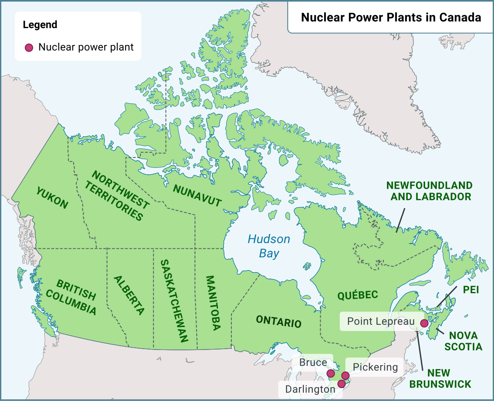
CANDU 원자로
다음 다이어그램은 CANDU 원자로의 부품을 보여줍니다.
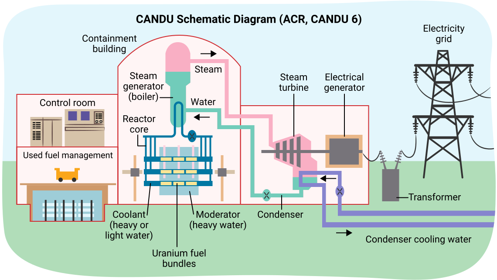
CANDU 원자로의 안전성
CANDU 원자로에는 다른 설계에서 발생한 것과 같은 대규모 재난을 방지할 수 있는 많은 안전 기능이 있습니다. 1986년 Chernobyl 원자로 노심 용융에서는 사용된 감속재(moderator)가 가연성이었습니다. 원자로가 폭발하자 가연성 감속재가 방사성 연기를 유럽과 아시아 전역으로 퍼뜨렸습니다. CANDU 원자로에서는 감속재로 물을 사용하기 때문에 이런 일이 발생할 수 없습니다. 원자로 자체는 만약의 사태에 대비하여 콘크리트로 둘러싸여 있습니다. 원자로가 과열되지 않도록 하는 많은 안전 장치가 있으며, 누출 시 증기가 빠져나가지 않도록 하는 장치도 있습니다. 마지막으로, 모든 CANDU 원자로 주변에는 비거주 상태로 유지되어야 하는 2 km 구역이 있어야 합니다.
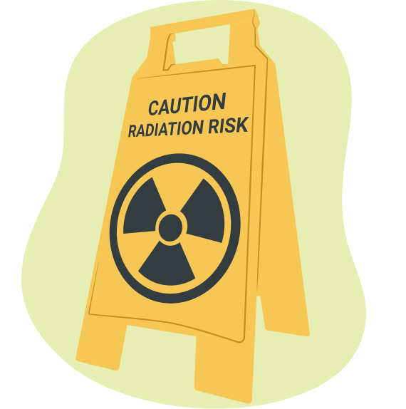
핵폐기물 처리
원자력 발전소는 두 가지 유형의 폐기물을 생성합니다: 방사성 원자 형태의 핵폐기물(nuclear waste)과 증기 발생기에서 사용되지 않는 과잉 열인 열폐기물(thermal waste)입니다. 이 두 가지 유형의 폐기물에 대해 더 자세히 알아보려면 각 탭을 누르세요.
원자로에 대한 논쟁
원자로에는 많은 장점과 단점이 있으며, 원자력 에너지에 대한 논쟁은 예측 가능한 미래까지 계속될 것입니다. 원자력 에너지와 관련하여 대부분의 사람들이 할 수 있는 최선의 일은 정보를 계속 파악하고 자신만의 의견을 형성하는 것입니다.
다음은 장점과 단점 중 일부입니다.
| 장점 | 단점 |
|---|---|
| 온실가스를 생성하지 않으므로 원자력은 기후 변화에 거의 영향을 미치지 않습니다. | 핵폐기물은 수년간 방사성 상태로 남아 있기 때문에 처리하기 어렵습니다. |
| 소량의 우라늄이 매우 많은 양의 에너지를 생산합니다. | 우라늄은 재생 불가능한 자원이므로, 결국 우라늄 공급이 고갈될 것입니다. |

노트
노트에 있는 KWL 차트를 다시 참조하세요:
| 무엇을 알고 있나요(KNOW)? | 무엇을 알고 싶나요(WANT)? | 무엇을 배웠나요(LEARNED)? |
|---|---|---|
이 학습 활동에서 배운 내용을 채워 차트를 완성하세요.
두 번째 열(무엇을 알고 싶나요)을 살펴보고 아직 답이 되지 않은 질문이 있는지 확인하세요. 일부 질문은 이 과목의 범위를 벗어날 수 있지만, 직접 온라인에서 조사해 볼 기회입니다.
노트
이 단원의 모든 학습 활동을 완료했으므로, 다음 주제를 활용하여 독자적인 조사를 수행하세요. 조사 결과를 노트에 기록하세요.
- 이 단원에서 다룬 주제와 관련 있는 관심 있는 직업을 선택하세요. 이 직업을 추구하는 데 필요한 교육과 훈련을 조사하세요.
- 이 단원의 내용과 관련된 물리학 분야의 유명한 캐나다 물리학자를 선택하세요. 물리학자의 이름, 물리학 지식에 기여한 시기, 기여 내용, 그리고 사회에 어떤 이익을 주었는지를 포함하는 짧은 전기를 준비하세요.
자기 점검 퀴즈
이해도를 확인해 보세요!
다음 자기 점검 퀴즈를 완료하여 학습 진행 상황과 집중해야 할 영역을 확인하세요.
이 퀴즈는 피드백용이며 성적에 포함되지 않습니다. 이 퀴즈에 대한 시도 횟수는 무제한입니다. 시간을 들여 최선을 다하고 제공되는 피드백을 곰곰이 생각해 보세요.
퀴즈를 눌러 이 도구에 접근하세요.
학습 활동 3.5 과제
준비가 되면, 다음 페이지로 이동하여 3.5 과제새 창에서 열림.에 대해 더 알아보세요.